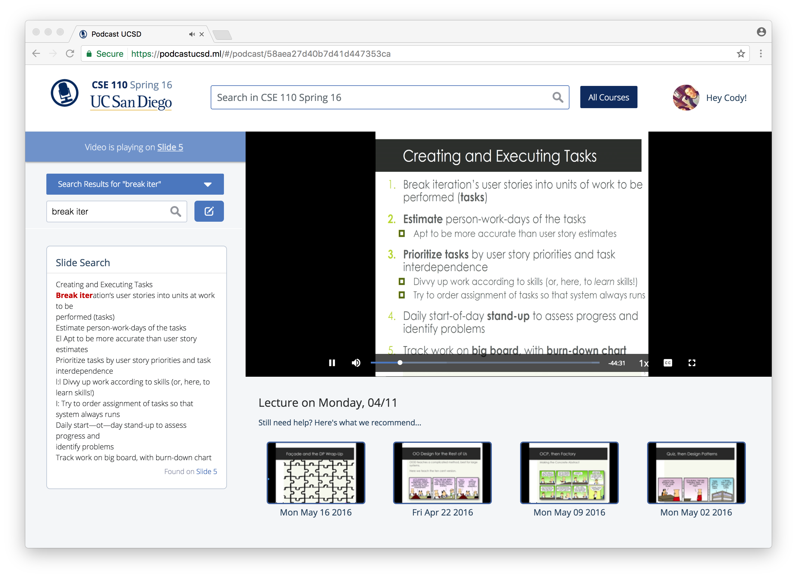
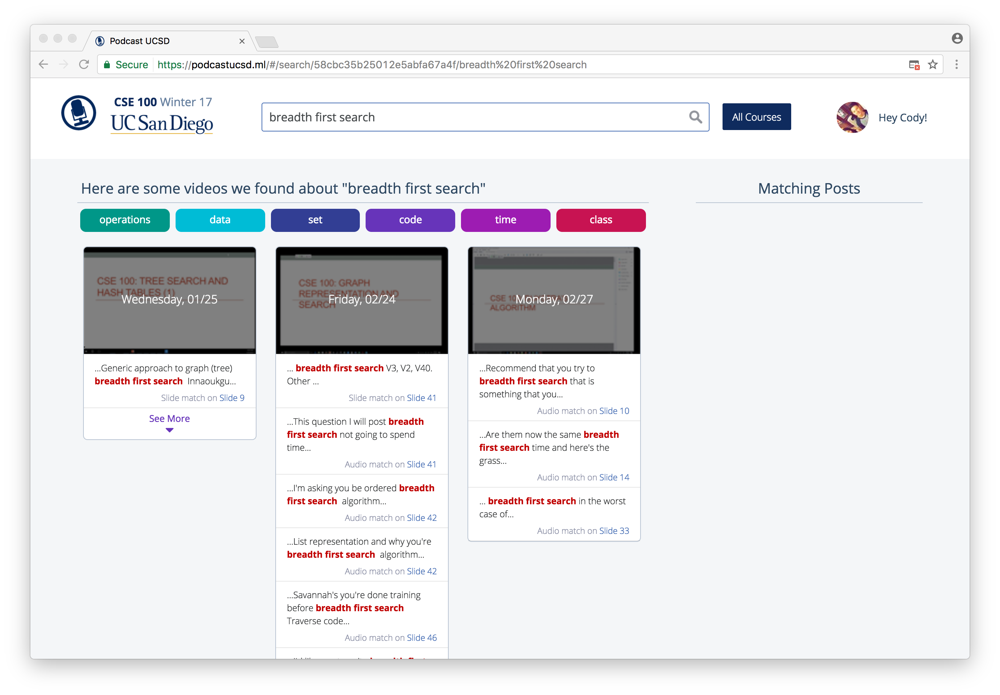

I am a passionate learner and engineer of code. Knowing that what I build has the potential to impact another body on this earth motivates me to go above and beyond. I love to work off other people, and bring new insights to the table. I am comfortable with Java and C++. However, I am more than willing to learn what's new or required from any position I pursue.
Projects
UCSD Podcast
A web application that gives UCSD students direct access to textual and audile content from podcasts. Course wide searches can be made for keywords spoken by the professor or keywords displayed on any lecture slide. Moreover, students can interact with this content and other students through a posting system that caters to each lecture slide. There are currently 69 courses available and close to 400 users. Developed as a team of 10 UCSD students.
• Developed a clean user interface for onboarding using jQuery, JavaScript, and HTML/CSS.
• Developed algorithm and UI for course favorites and logic for autocomplete of user queries with relevant keywords from course.
• Utilized Require.js to handle dependencies, modularize script loading, and improve performance.
• Future work includes implementing an API for course favorites.
• Technologies: MEAN stack, Python


Myaló Facebook Chatbot
A chatbot platform to chart the progress of individuals with depressive tendencies as a team of 4.
• Developing a Node.js chatbot powered by the Facebook Messenger Platform.
• Implementing desired chat flow logic through Chatfuel.
• Future work includes analyzing user data and visualizing a user’s weekly progress.
• Technologies: Chatfuel, MongoDB, Express, Node.js
2048
2048 Course project utilizing JavaFX/Java GUI to recreate the famous sliding tile game by Gabriele Cirulli.
• Developed algorithm for tile movement along the board.
• Practices persistence by saving board representations to disk.
• Scalable to multiple to board sizes not just 4x4.
• Extended project by implementing logic and graphical components for a best score, game restart, game win, and board rotation.